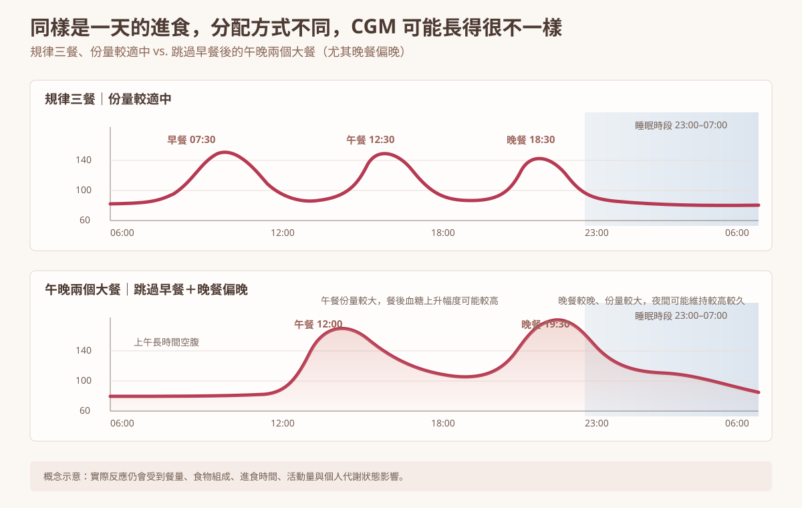

我自己其實曾經很認真做過斷食，而且體重真的有下降。
所以我不會說斷食沒有效。
但做了一段時間之後，我開始不只看體重。我會看 CGM、睡眠，也會看自己的腸胃反應。
真正值得問的，也許不是「我今天空腹幾個小時」，而是這段空腹最後把我的進食行為帶去了哪裡。
有時候空腹拉得很長，的確少吃了；但有時候，它也可能讓下一餐變得很大、很油、吃得很快，甚至因為餓太久，出現一種「我都忍這麼久了，現在可以吃了吧」的補償感。
斷食真正有幫助的，只有空腹時間嗎？
不一定只有空腹時間。
斷食本身可能透過空腹時間、進食時段與身體使用能量的方式產生影響。但在真實生活裡，一個人開始斷食之後，通常還會同時改變很多事情。
- 宵夜減少
- 零食減少
- 無意識進食變少
- 進食時間變得比較集中
- 總攝取量可能下降
- 餐次開始有比較清楚的界線
- 開始分辨「真的餓」和「只是習慣想吃」
- 才發現自己原本一天其實一直都有東西進嘴巴
所以看到斷食有效時，我不會急著把所有效果都歸功於那個「16 小時」或「18 小時」。
斷食帶來的改變，可能同時來自空腹本身，也來自整個進食行為被重新整理。
斷食可能改變哪些習慣？
這其實是我現在很重視的一部分。
有些人真正受益的，不是空腹 16 小時這個數字，而是晚餐吃完之後，不再一路吃零食到睡前。
有些人原本除了三餐，還有咖啡配點心、下午茶、宵夜，甚至只是看到桌上的食物就順手拿一口。
原來自己一天真正「沒有在吃東西」的時間，其實很短。
也有人因為開始有進食界線，反而更願意好好吃正餐，不再整天靠零碎的東西補來補去。
斷食有時候真正整理的，不只是時間，而是「一直在吃」這件事。
減少頻繁進食，不等於要把餐次一路壓到越少越好。
進食窗口太短，另一端也可能出現代價
這是我後來對斷食最大的保留之一。
因為很容易出現一個思路：14 小時有效，那 16 小時是不是更好？16 小時做得到，那 18 小時呢？再往後，可能變成一天只剩兩餐，甚至一餐。
我自己其實也曾經走過這樣的階段。有將近一年，我一天大概只吃一到一點五餐，有時候就是一餐正餐，再加上一個小小的沙拉餐。
所以我不是沒有走過這種很極端的做法。也因為自己真的做過，我後來才更能感受到：
減少頻繁進食，和把餐次一路壓到越少越好，是兩件不同的事。
當進食窗口壓得很短，有些人會開始出現另一端的補償。白天空很久，到了真正能吃的時候，心理上容易有一種「我都已經空這麼久了，現在可以吃了吧」的感覺。於是單餐份量變大，也更容易選擇高油脂、高熱量、口味重的食物。
我更在意的是：空腹之後，你怎麼吃？
這是我後來用 CGM、睡眠和腸胃感受一起觀察時，很有感的一件事。
當空腹時間拉得很長，下一餐如果份量又很大、油脂很多，甚至同時有不少碳水，我自己從 CGM 和腸胃感受上，會特別注意兩件事：
- 餐後血糖是不是拖得比較久
- 消化是不是變得比較慢，容易脹或不舒服
即使有人選擇把碳水壓得很低，我也不會因此只看血糖就下結論。因為對我來說，腸胃舒服不舒服、血脂變化、睡眠與長期可維持性，也都要一起看。
如果最大的那一餐又集中在晚上，吃完沒多久就睡覺，餐後活動少、消化還在進行，血糖與睡眠也可能一起受到影響。
所以我現在看斷食，不只看空腹時數，而會把「下一餐」也算進去。

那到底要空腹多久才有效？
目前沒有一個所有人都適用的答案。
目前針對間歇性斷食中的限時進食模式（time-restricted eating, TRE）的研究，使用過不同長度的進食窗口，但整體結果並沒有一致顯示「窗口越短、空腹越久，效果就一定越好」。
2026 年一篇納入 41 個隨機試驗、2287 人的系統性回顧與 network meta-analysis 顯示，TRE 整體可改善部分體重與代謝指標；但不同進食窗口長度的結果並不一致。相較之下，較早安排進食的 TRE，在部分體重與糖代謝結果上比晚間 TRE 更有優勢。
16:8 是一種常見的操作方式，不代表不到 16 小時就完全沒有效果，也不代表 18:6 就一定比 16:8 更好。
我現在更在意的，是整體結果
對我來說，斷食真正值得留下的，不一定是一個固定時數。
如果它幫助你減少零食、宵夜與無意識進食，讓餐與餐之間真正有停頓，也讓正餐吃得更完整，這些改變都可能很有價值。
但如果一路縮短進食窗口之後，最後變成白天一直忍、晚上一次吃很多、腸胃不舒服、CGM 拖著高，睡眠也受到影響，那就值得重新調整。
斷食真正要看的，不只是你能空多久，還要看你空完之後，身體怎麼吃、怎麼消化、怎麼恢復。
斷食是工具，不是時數競賽
我不反對斷食，因為我自己也曾經從它身上得到幫助。
我比較不認同的是，把空腹時數本身變成唯一追求的目標。
如果斷食幫助你減少原本頻繁、零碎、沒有意識的進食，這些改變值得留下。但如果方法一路走到最後，必須靠忍耐去撐、靠大餐來補、靠意志力一直守時數，那就可能已經偏離原本想改善的方向。
重點整理
- 斷食本身可能有其生理作用，但執行斷食時，通常也會一起改變很多飲食習慣。
- 斷食可能真正改善的，是零食、宵夜、無意識進食與過度頻繁的進食。
- 減少頻繁進食，不等於餐次越少、空腹越久就越好。
- 目前沒有一致證據支持「空腹越久，代謝效果一定越好」。
- 16:8 是常見做法，不是一條所有人都必須達到的生理及格線。
- 如果進食窗口太短，最後變成補償性大餐、腸胃不適、晚間血糖拖高或睡眠受影響，就值得重新評估。
- 真正重要的是看整個飲食安排，最後把身體帶去哪裡。
不要一直吃，也不要餓到下一餐才一次補回來。
真正要找的，是一個有進食界線、腸胃承受得住、血糖與睡眠也穩定，而且能放進生活裡的方式。
參考文獻
- Effects of timing and eating duration of time restricted eating on metabolic outcomes: systematic review and network meta-analysis. BMJ Medicine. 2026.
- Effects of time-restricted eating on markers of glucose metabolism and regulation in individuals with prediabetes or type 2 diabetes: a systematic review and meta-analysis of randomised controlled trials. 2026.
- Effects of timing of meal intake on glucose metabolism: a systematic review and meta-analysis of human intervention studies. 2026.
- Gentilcore D, et al. Effects of fat on gastric emptying of and the glycemic, insulin, and incretin responses to a carbohydrate meal in type 2 diabetes. J Clin Endocrinol Metab. 2006;91(6):2062–2067.